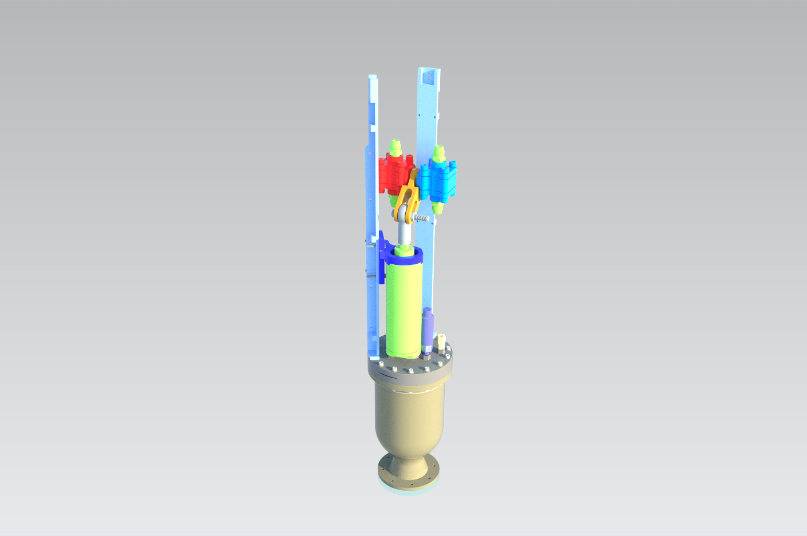

Project 01 · Actuator system owner
Purdue Space Program

System owner for the actuation system for Purdue Space Program's Pathfinder program. I lead a team of students in integrating the actuator subsystem into the rocket. This project posed many unique challenges, such as tight space constraints, the system being a crucial part of the rocket, neccesitating lots of analysis, as well having to design the system to allieviate 6 axes of overconstraints.